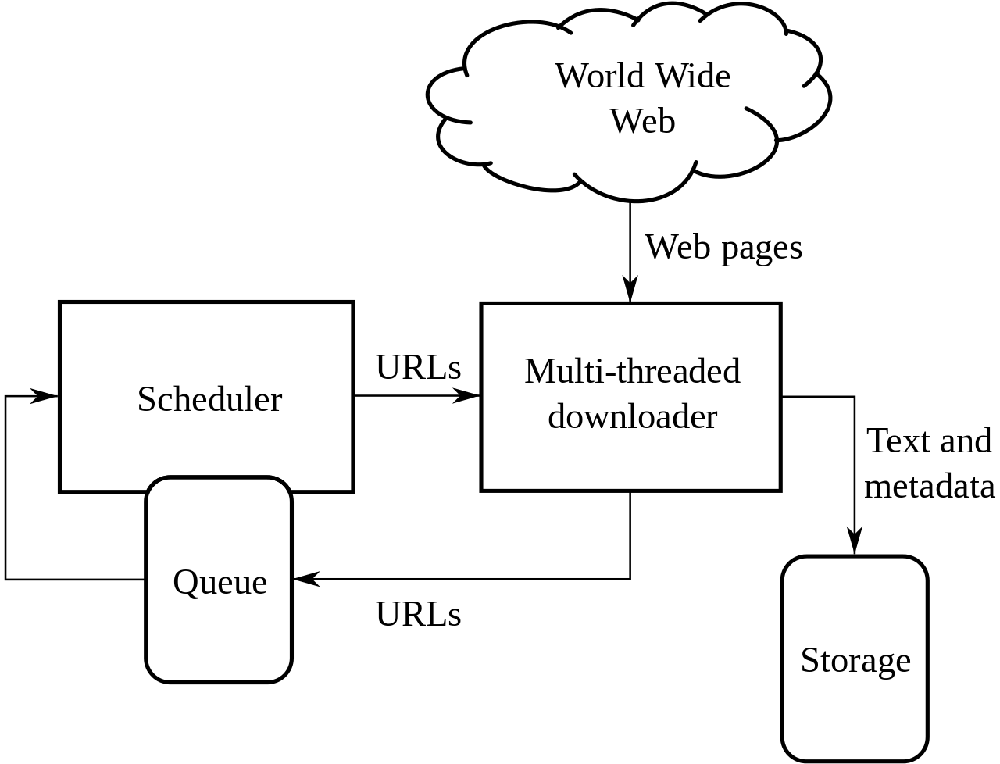
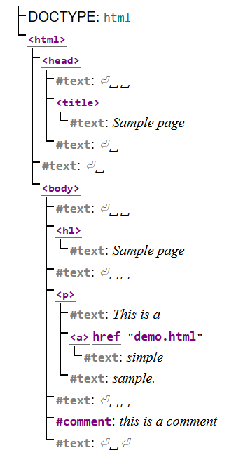
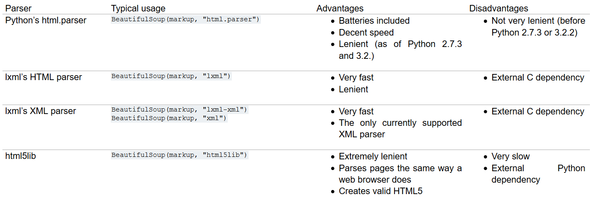

class: center, middle # IEMS 5703<br/>Network Programming and System Design ### Lecture 11 - Web Crawling and Scraping #### Albert Au Yeung<br/>12th April, 2018 --- class: middle, center # Web Crawling and Scraping --- # Collecting Data from the Web ### We need data from the Web for various purposes - Collecting data for a database (e.g. list of football clubs in Europe) - Monitoring updates (e.g. news, stocks, ticket selling, etc.) - Market research (e.g. what are people talking about now?) - Gather training data for machine learning tasks (e.g. images of cats and dogs) ### How can we collect data **automatically**? --- # How can Data be Collected? ### Application Programming Interfaces (APIs) - Many Websites offer APIs to their data for free or with a charge - Examples: - [Quandl's API for Stock Data](https://blog.quandl.com/api-for-stock-data) - [News API by Juhe](https://www.juhe.cn/docs/api/id/235) - [Transport for London Unified API](https://api.tfl.gov.uk/) ### Others - For many other Websites, the data are simply posted on a Web page in a semi-structured format (e.g. an HTML table) - Examples: - [Score Tables of Football Matches on Guardian](https://www.theguardian.com/football/tables) --- # The Need for Web Crawling and Web Scraping - In order to collect data directly from the HTML pages, we usually need to **crawl** and **scrape** Web Pages ### Crawling - Create a software robot to follow hyperlinks to discover pages that (potentially) contain useful data - Focus on the **collection** of raw data ### Scraping - Parse pages collected and extract useful data from the HTML source code - Focus on the **extraction** of structured data from the raw data --- class: middle, center # Web Crawling --- # Web Crawling - A [**Web crawler**](https://en.wikipedia.org/wiki/Web_crawler) (Web spider) systematically browses the Web to collect Web pages - Follow **hyperlinks** to discover new pages to visit - Focus on collecting the raw data for further analysis and processing - Usually start with some **seed pages** - May focus on pages that are under certain **domains** - Used by **search engines** to **index** the Web --- # Architecture of Web Crawler <center>  <br/><br/> Source: https://en.wikipedia.org/wiki/Web_crawler </center> --- # Common Challenges - Determine **which hyperlinks** to follow - Determine if a page has been crawled (ref: [URL Normalization](https://en.wikipedia.org/wiki/URL_normalization)) - Determine **when** to re-crawl / re-visit a page again - How to speed up crawling? - How to scale a Web crawler? - ... --- # Challenges in Web Scraping - Websites in general welcome search engines to crawl and index their pages for **visibility** (Ref: [Search Engine Optimization - Wikipedia](https://en.wikipedia.org/wiki/Search_engine_optimization)) - However, many Websites do not want others to crawl and scrape their pages at all (or too quickly) to **protect their data** - Most algorithms for preventing Web scraping focus on determining whether a bot or a human is trying to access the pages on a Website --- # Methods for Preventing Web Scraping - IP Address blocking - Monitoring of traffic, rate of access, etc. - Distinguish bots from human users using different checkng and tests such as: - [CAPTCHA](https://en.wikipedia.org/wiki/CAPTCHA) - Monitor how fast a client fills in a form and clicks a button - Monitor sequence of pages accessed by the client - ... - Use a combination of AJAX / JavaScript / CSS / cookies to obfuscate data displayed on the screen - ... Ref: [https://en.wikipedia.org/wiki/Web_scraping#Methods_to_prevent_web_scraping](https://en.wikipedia.org/wiki/Web_scraping#Methods_to_prevent_web_scraping) --- # More on Web Crawlers - Read *The Anatomy of a Large-Scale Hypertextual Web Search Engine* [http://infolab.stanford.edu/~backrub/google.html](http://infolab.stanford.edu/~backrub/google.html), which describes how Google works --- class: middle, center # Web Scraping --- # Web Scraping - [**Web scraping**](https://en.wikipedia.org/wiki/Web_scraping), also known as Web harvesting or Web data extraction - Focus on extracting useful data from Web pages - Involve **parsing** the **HTML** source code of a page, and then apply **algorithms** to extract the data needed - For turning **unstructured data** on the Web to structured data for analysis - An interesting project: **Read the Web** [http://rtw.ml.cmu.edu/rtw/](http://rtw.ml.cmu.edu/rtw/) --- # HTML - HTML stands for [Hypertext Markup Language](https://www.w3.org/html/) - Specification of the latest version of HTML (HTML5): [https://www.w3.org/TR/html52/](https://www.w3.org/TR/html52/) - A markup language used to instruct a browser how to **structure** the content in a web pages - Consists of a series of **elements**, which can be used to enclose, wrap, or mark up different parts of the content to make it appear or act a certain way - Elements can be **nested** - Learn: https://developer.mozilla.org/en-US/docs/Learn/HTML --- # HTML - A simple HTML document ```html <!DOCTYPE html> <html> <head> <meta charset="utf-8"> <title>My Page</title> </head> <body> <h1>My Homepage</h1>> <div> <p>This is my homepage</p> <a href="page2.html">Go to Page 2</a> </div> </body> </html> ``` --- # Parsing HTML - When the browser receives an HTML document, it needs to **parse** the document and determine how to structure and display the content - An HTML document is usually interpreted as a tree structure called the [Document Object Model](https://en.wikipedia.org/wiki/Document_Object_Model) - DOM treats an HTML document as a tree structure: each **node** is an object representing a part of the document - A DOM tree is an **in-memory** representation of an HTML document - Once represented as a DOM tree, the browser can then determine how to display the content --- class: split # HTML and DOM .column-left[ - An examlple taken from [HTML 5.2 Specification](https://www.w3.org/TR/html52/introduction.html#intro-early-example) ```html <!DOCTYPE html> <html> <head> <title>Sample page</title> </head> <body> <h1>Sample page</h1> <p>This is a <a href="demo.html">simple</a> sample.</p> <!-- this is a comment --> </body> </html> ``` ] .column-right[  ] --- # Cascading Style Sheets (CSS) - **CSS (Cascading Style Sheets)** is controls how content in a Web page is displayed in a browser - The browser applies CSS **style declarations** to **selected elements** - A style declaration consists of a set of **properties** and their **values** - Specification: [https://www.w3.org/Style/CSS/specs.en.html](https://www.w3.org/Style/CSS/specs.en.html) - Learn: [https://developer.mozilla.org/en-US/docs/Learn/CSS/Introduction_to_CSS/How_CSS_works](https://developer.mozilla.org/en-US/docs/Learn/CSS/Introduction_to_CSS/How_CSS_works) --- # CSS - A CSS **rule** is a set of **properties** associated with a **selector** ```css <style> /* The selector "div" indicates that all div elements in the document will be affected by this rule */ div { /* Set font colour to yellow */ color: green; /* Set background colour to black */ background-color: black } </style> ``` - **Cascading** refers to the rules that govern how selectors are prioritized to change a page's appearance. This is a very important feature, since a complex website can have thousands of CSS rules. --- # CSS Selectors - In CSS, **selectors** are used to target the HTML elements in a Web page that we want to style - Selectors are used to determine on which elements in a page a rule should be applied to - Selectors can be very complicated, because the structure of an HTML document can be very complex - Types of selectors (see [Selectors Introduction](https://developer.mozilla.org/en-US/docs/Learn/CSS/Introduction_to_CSS/Selectors)): - Simple selectors - Attribute selectors - Pseudo-classes and pseudo-elements selectors - Combinators / multiple selectors --- # Simple Selectors - Simple selectors match one or more elements based on element type, class, or id. ```css /* Targeting all "div" elements */ div { ... } /* Targeting all "p" elements with the class "address" */ p.address { ... } /* Targeting all "span" elements with the id "phone" */ span#phone { ... } ``` --- # Attribute Selectors - Attribute selectors match one or more elements based on their attributes/attribute values. - Consider the HTML below: ```html <div> <div data-name="phone">+852 2345 6789</div> <div data-name="address contact">CUHK, Shatin, Hong Kong</div> </div> ``` - `data-name` is an attribute of the HTML element `div` in the above example --- # Attribute Selectors - Attribute selectors selects elements by matching attribute names and values ```css /* Elements with the attribute "data-name" */ [data-name] { color: blue; } /* Eelements with the attribute "data-name" and value "phone" */ [data-name="phone"] { text-decoration: underline; } /* Elements with the attribute "data-name" and value contains "address" */ [data-name~="address"] { color: red; } ``` --- class: equal-split # Pseudo-classes/elements Selectors - **Pseudo-classes selectors**:<br/>select an element that is only in a certain **state** (e.g. a checkbox that is currently being checked) - **Pseudo-elements selectors**:<br/>select an element that is in a certain position relation to another element - For more examples, see [Pseudo-classes and pseudo-elements | MDN](https://developer.mozilla.org/en-US/docs/Learn/CSS/Introduction_to_CSS/Pseudo-classes_and_pseudo-elements) .column-left[ HTML ```html <div> <p>Paragraph 1</p> <p>Paragraph 2</p> <p>Paragrahp 3</p> </div> ``` ] .column-right[ CSS ```css /* Select the second p inside the div */ div p:nth-child(2) { color: blue; text-decoration: underline; } ``` ] --- # CSS Selectors and Scraping ### Why do we want to learn about CSS Selectors? - CSS Selectors are originally used to target specific elements in a page for **styling** - However, a CSS selector can also be used as a **unique identifier** of an element in a page - We can extract specific data from a page if we know the selector to the element containing the data ### Consider the following example: - Many Wikipedia page has an **infobox**, in which some semi-structured data can be obtained. How can we extract these **infoboxes** from each Wikipedia page? - E.g. https://en.wikipedia.org/wiki/Hong_Kong (selector of the infobox: `table.infobox`) --- class: middle, center # Web Scraping in Python --- # `HTMLParser` - Python comes with the `HTMLParser` module in the standard library for parsing HTML documents - An event-driven approach to parsing - Only use this if the HTML document is well-formated (with proper start and end tags) - Steps to use the `HTMLParser`: 1. Create a class that **subclass** `HTMLParser` 2. Implement some of the following methods - `handle_starttag()` - `handle_endtag()` - `handle_comment()` - `handle_data()` --- # `HTMLParser` Example - Ref: [https://docs.python.org/3/library/html.parser.html](https://docs.python.org/3/library/html.parser.html) - Consider the following HTML document ```html <html> <head> <title>My Page</title> </head> <body> <h1>Page Title</h1> </body> </html> ``` --- class: split # `HTMLParser` Example .column-left[ **Code** ```python from html.parser import HTMLParser class MyHTMLParser(HTMLParser): def handle_starttag(self, tag, attrs): print("Found a start tag:", tag) def handle_endtag(self, tag): print("Found an end tag :", tag) def handle_data(self, data): print("Found some data :", data) parser = MyHTMLParser() parser.feed(html) ``` ] .column-right[ **Output** ```bash Found a start tag: html Found a start tag: head Found a start tag: title Found some data : My Page Found an end tag : title Found an end tag : head Found a start tag: body Found a start tag: h1 Found some data : Page Title Found an end tag : h1 Found an end tag : body Found an end tag : html ``` ] --- # BeautifulSoup - BeautifulSoup: [https://www.crummy.com/software/BeautifulSoup/](https://www.crummy.com/software/BeautifulSoup/) - A more commonly used library for parsing HTML documents - You are recommended to use the latest version (BeautifulSoup4): ```bash $ pip3 install beautifulsoup4 ``` - Strictly spearking, BeautifulSoup is not a parser, but a framework for parsing HTML documents - When using BeautifulSoup, you need to specify which **HTML parser** you would like to use --- # BeautifulSoup ### Parsers - You can use one of the following parsers with BeautifulSoup - `html.parser`: the HTML parser from the Python standard library - `lxml`: a fast HTML and XML parser - `html5lib`: a pure Python HTML5 parser (parse a page just as a browser does) - Examples: ```python from bs4 import BeautifulSoup as BS soup = BS(html_document, 'html.parser') # Using the HTML parser soup = BS(html_document, 'lxml') # Using lxml soup = BS(html_document, 'html5lib') # Using html5lib ``` --- # BeautifulSoup - Parsers - Different parsers offer different features, below is a summary: <center>  </center> - Ref: [https://www.crummy.com/software/BeautifulSoup/bs4/doc/#installing-a-parser](https://www.crummy.com/software/BeautifulSoup/bs4/doc/#installing-a-parser) --- # Using BeautifulSoup ### Once you have created a BeautifulSoup object, you can do several things: 1. **Navigating** the HTML DOM tree 2. **Searching** in the HTML DOM tree 3. **Modifying** the HTML DOM tree - In Web scraping, we mostly will perform 1 and 2. Let's focus on navigating and searching below --- # Creating BeautifulSoup Object - You can either pass a **file object** or a **string** to BeautifulSoup ```python from bs4 import BeautifulSoup as BS # Method 1 with open("index.html", "r", encoding="utf-8") as fp: soup = BS(fp) # Method 2 with open("index.html", "r", encoding="utf-8") as fp: content = fp.read() soup = BS(content) ``` --- # Sample HTML Document - Let's consider parsing the following HTML document in the examples to follow: ```python html_doc = """ <html> <head><title>IEMS5703 Homepage</title></head> <body> <p class="title"><b>IEMS5703</b></p> <p class="description">Network Programming and System Architecture</p> <a href="/lectures/lectures01.html" class="link" id="link1">Lecture 01</a>, <a href="/lectures/lectures02.html" class="link" id="link2">Lecture 02</a>, <a href="/lectures/lectures03.html" class="link" id="link3">Lecture 03</a> </body> </html> """ from bs4 import BeautifulSoup as BS soup = BS(html_doc, 'lxml') ``` --- # Navigating the DOM Tree - Basic navigation: ```python soup.head # <head><title>IEMS5703 Homepage</title></head> soup.title # <title>IEMS5703 Homepage</title> soup.body.b # <b>IEMS5703</b> soup.a # Note: returns only the first element matching the tag name # <a class="sister" href="http://example.com/elsie" id="link1">Elsie</a> # To get a list of all elements matching the specific tag name: soup.find_all('a') ``` --- # Navigating the DOM Tree - Accessing parents / children: ```python soup.head.children # This returns a generator of all children elements of head list(soup.head.children) # [<title>IEMS5703 Homepage</title>] soup.b.parent # <p class="title"><b>IEMS5703</b></p> # Print the tag names of all parents of the first p element for parent in soup.p.parents: if parent is not None: print(parent.name) # body # html # [document] ``` --- # Searching - In addition to navigating the DOM tree, you can also search for elements that match certain criteria ```python # search for all the <p> tags in the HTML document soup.find_all('p') # search for all the <p> and <a> tags soup.find_all(['p', 'a']) # search using regular expression # Find all elements with the letter b in the tag name import re soup.find_all(re.compile("b")) # search for all <p> tags with class name 'title' soup.find_all('p', {'class': 'title'}) ``` --- # Searching Using CSS Selectors - If you know the CSS selector of an element, you can use the `select` function to locate the element in the tree - Note: `select` returns **a list** of elements that match the selector given - Take the page [https://en.wikipedia.org/wiki/Hong_Kong](https://en.wikipedia.org/wiki/Hong_Kong) as an example: ```python # Locate the infobox at the top of the page: soup.select('table.infobox:nth-child(3)') # Locate the first paragraph of the Wikipedia article soup.select('.mw-parser-output > p:nth-child(4)') # Locate the table of content of the article soup.select('#toc') # Locate the geo-coordinates of Hong Kong soup.select('.geo-dec') ``` --- # Common Procedures for Web Scraping ### Example: Collecting articles from a blog - For example: [http://highscalability.com/](http://highscalability.com/) - Steps: 1. Identify the **URL pattern** of **paging** (e.g. http://highscalability.com/blog/?currentPage=2) 2. **Generate** a list of URLs based on the pattern 3. Identify the **selector** that selects all the links to individual articles (e.g. `h2 a`) 4. Download the pages, parse the HTML documents, and **extract the links** 5. Download the HTML page source of each individual articles 6. Further extract data from the HTML documents collected. Ref: [scraping.py](/lectures/files/scraping.py) --- # Things You Should Do - Check how **fast** you can crawl pages from a domain - Perform **random sleep** or **exponential backoff** if necessary - Insert appropriate **HTTP headers** or even **cookies** to avoid access denial - Store **raw HTML documents** before extracting data from the documents, thus avoid crawling the same URL again in case any exception or problem occur during the data extraction process - Check the size of a document downloaded, if **file size** is unusual (e.g. too small), stop the crawling process earlier for troubleshooting --- # More on Web Scraping ### Scraping Framework - Scrapy is a framework for performing Web crawling and scraping - Checkout Scrapy: [https://docs.scrapy.org/en/latest/intro/tutorial.html](https://docs.scrapy.org/en/latest/intro/tutorial.html) ### Selenium - [Selenium](https://github.com/SeleniumHQ/Selenium) (Pythno documentation available at [http://seleniumhq.github.io/selenium/docs/api/py/](http://seleniumhq.github.io/selenium/docs/api/py/)) is a project for **web browser automation** - For many Websites, the content is dynamically generated using JavaScript and AJAX while the page is loaded. Thus, simply downloading the page source will not get you the data you want - You can use Selenium's Web driver to control a Web browser (e.g. Firefox or Chrome) programmatically to render a page and then extract data from the rendered page --- # More on Web Scraping ### Legal issues of Web Scraping - Scraping data from the Web may be agains the **terms of use** of certain Websites. - However, it is difficult to **enforce** these terms in practice - Nevertheless, we should be careful when using the data collected by Web scraping - Ref: [https://en.wikipedia.org/wiki/Web_scraping#Legal_issues](https://en.wikipedia.org/wiki/Web_scraping#Legal_issues) --- class: center, middle # Assignment 3 --- # Assignment 3 - Task: **An HTTP-based Movie Search Engine** - Use **Flask** to develop the server application - Three functions: 1. **Search** for movies with a query string 2. **Retrieve** information of a movie 3. Allow user to **comment** on a movie - Objectives: - Develop a server application based on HTTP - Learn to implement APIs in Flask - Understand how a search engine works --- # Reading the Data File - The movie data are stored in CSV format - You can use the `csv` module in Python: ```python import csv with open('imdb_top1000.csv', 'rb') as csvfile: csv_reader = csv.reader(csvfile, delimiter=',', quotechar='"') for row in csv_reader: ... ``` - Or you can simply use `pandas`: ```python import pandas as pd df = pd.read_csv("imdb_top1000.csv") ... ``` --- # Reading the Data File - To read in the movie data and assign a unique ID to each movie, you can do something like below: ```python import pandas as pd # Read the CSV file into a data frame in pandas df = pd.read_csv("imdb_top1000.csv") # Fill all null or undefined values with 0 df.fillna(0, inplace=True) # Convert the data frame into a dictionary, # The key is a unique ID, the value is the movie's data movies = {i:m for i, m in enumerate(df.to_dict('record'))} # assing this to app.movies when creating the Flask app ``` --- # Reading the Data File - The content of `movies[0]`: ```javascript { "Votes": 757074, "Rating": 8.1, "Director": "James Gunn", "Title": "Guardians of the Galaxy", "Genre": "Action,Adventure,Sci-Fi", "Year": 2014, "Actors": "Chris Pratt, Vin Diesel, Bradley Cooper, Zoe Saldana", "Runtime (Minutes)": 121, "Metascore": 76.0, "Rank": 1, "Revenue (Millions)": 333.13, "Description": "..." } ``` --- # Building Reverse Indices - To build the **title** index and the **actor** index, you need to process the texts first - You are recommended to use `nltk`'s `word_tokenize` functions - The procedures to build the indices: 1. Create an empty dictionary (mapping), each key should be a word, each value should be **a list of movie IDs** to which the word is associated with 2. Pre-process the texts (e.g. lowercasing, tokenization) 3. For each word that appear in the text, append the movie ID into the list under the corresponding key --- # Building Reverse Indices ```python # Empty dictionaries app.title_index = {} app.actor_index = {} # Loop throuhg all movies for i, m in movies.items(): # Create lookup entries for titles words = nltk.word_tokenize(m["Title"].lower()) for w in words: app.title_index.setdefault(w, []).append(i) # Create lookup entries for actors words = nltk.word_tokenize(m["Actors"].lower()) for w in words: app.actor_index.setdefault(w, []).append(i) ``` --- # Building Reverse Indices - Examples of entries ```python >>> app.actor_index['dicaprio'] [80, 82, 99, 129, 137, 138, 144, 459, 669, 737] >>> app.actor_index['peter'] [229, 236, 318, 361, 366, 386, 539, 611, 673, 740, 812, 877] >>> app.title_index['world'] [75, 85, 158, 214, 432, 799, 978] >>> app.title_index['war'] [35, 93, 234, 432, 674, 753] ``` --- # The Search API - The search API can be easily implemented once you have the reverse Indices - For example, the code below will give you the list of movies that match the search query ```python # Get the query form the query string query = request.args.get("query").lower() attribute = request.args.get("attribute") # Get the movie IDs that match the query term ids = [] if attribute == "title": ids = current_app.title_index.get(query, []) elif attribute == "actor": ids = current_app.actor_index.get(query, []) # Get the full information of each movie using the list of IDs movies = [current_app.movies[i] for i in ids] ``` --- # The Comments API - For each movie you stored in memory, create a new field `comments` and initialize it with an **empty list** - Whenever a user leaves a comment, insert the comment at the beginning of the list ```python movie_id = request.form.get("movie_id", type=int) user_name = request.form.get("user_name") comment = request.form.get("comment") movie = current_app.movies[movie_id] movie["comments"].insert(0, { "user_name": user_name, "comment": comment, "timestamp": datetime.now().strftime("%Y-%m-%d %H:%M:%S") }) ``` --- # More on Assignment 3 - In practice, the movie data should be stored in a database (e.g. MySQL or MongoDB) or a cache (e.g. Redis) - The search index can be built when the application is started, or can be **pre-computed** and stored in a database (depending on the size of the index) - The Comments API would involve **inserting new records** into the database - Other challenges: - How would you handle query string with **multiple words**? - How would you handle **spelling mistakes** in the query? - How can we reduce the time required to generate a response? - How would you update the indices when new movies are added? --- class: center, middle # End of Lecture 11